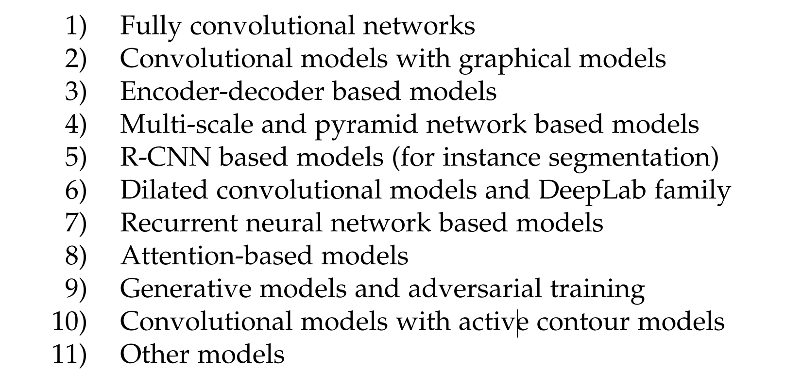

Image Segmentation Using Deep Learning: A Survey
一篇图像分割的综述。
写这篇笔记时（2021.04.01），被引用量为 140。2020 年 01 月份发布的论文，对在此之前的文献进行了全面的回顾。
Abstract
这篇 Survey 涵盖了语义和实例级分割的前沿工作（pioneering works for semantic and instance-level segmentation）
- (FCN) fully convolutional pixel-labeling networks,
- encoder-decoder architectures,
- multi-scale and pyramid based approaches,
- recurrent networks,
- visual attention models,
- (GAN) and generative models in adversarial settings
1 Introduction
早期的图像分割算法：thresholding, histogram-based bundling, regiongrowing, k-means clustering, watersheds, to more advanced algorithms such as active contours, graph cuts, conditional and Markov random fields, and sparsity-based methods.
在过去的几年里，深度学习（DL）模型已经产生了新一代的图像分割模型，其性能得到了显著的提高——通常可以达到最高的准确率。
图像分割（Image segmentation）可以表述为带有语义标签的像素的分类问题（semantic segmentation）或单个对象的分割问题（instance segmentation）。
- Semantic Segmentation： 语义分割用一组对象类别（如人、车、树、天空）对所有图像像素进行像素级标签。它一般比图像分类更难进行，因为图像分类预测整个图像的单一标签。
- Instance Segmentation：实例分割通过检测和划分图像中的每一个感兴趣的对象（例如，各个人的分区），进一步扩大了语义分割的范围。
这篇综述包含到 2019 年图像分割的最新文献，讨论了一百多种基于深度学习的细分方法。
将基于深度学习的工作按照其主要技术贡献进行如下划分：

2 OVERVIEW OF DEEP NEURAL NETWORKS
介绍最杰出的深度学习架构，包含，CNN、RNN、LSTM、GAN。
之后的发展出来的 Transformer、GRU 等不进行介绍。
Transfer Learning
在图像分割的任务，许多人使用在 ImageNet（比大多数图像分割数据集更大的数据集）上训练的模型作为分割网络的 encoder 部分。
2.1 Convolutional Neural Networks (CNNs)
Fukushima：“Neocognitron”
Hubel，Waibel：视觉皮层的层次性感受野模型。
LeNet
CNN 主要由三类层组成。
- Convolution layer
- Nonlinear layer
- Pooling layer
一些最著名的 CNN 架构包括：AlexNet、VGGNet、ResNet、GoogLeNet、MobileNet 和 DenseNet。
2.2 Recurrent Neural Networks (RNNs) and the LSTM
处理序列数据（sequential data）
RNN 通常在长序列上存在问题，它们在许多情况下无法捕捉到长期的依赖性。LSTM 被设计用来解决这个问题，结构内部包含三个门（input gate, output gate, forget gate），它们调节信息流入和流出一个存储单元，该单元在任意时间间隔内存储数值。
2.3 Encoder-Decoder and Auto-Encoder Models
encoder：compresses the input into a latent-space representation. feature(vector) representation
decoder：predict the output from the latent space representation.
2.4 Generative Adversarial Networks (GANs)
generator and a discriminator.
传统 GAN 中的生成器网络 G = z → y 学习从噪声 z（有一个先验分布）到目标分布 y 的映射，这与“真实”样本相似。
判别器网络 D 试图将生成的样本与“真实”样本区分开来。
自 GAN 发明以来，研究者们努力从多个方面改进/改造 GAN。
3 基于DL的图像分割模型
对 2019 年之前提出的百余种基于深度学习的细分方法进行了详细的评述。
This section provides a detailed review of more than a hundred deep learning-based segmentation methods proposed until 2019
3.1 Fully Convolutional Networks
语义图像分割的第一个深度学习作品之一，使用完全卷积网络（FCN），只包括卷积层。
通过使用跳层连接进行特征图融合，将语义信息（深层）和外观信息（浅层）结合起来，以产生准确的分割。
milestone
ParseNet：通过使用一层的平均特征来增强每个位置的特征，为 FCN 增加全局上下文。
- unpooled 和 concatenated
3.2 Convolutional Models With Graphical Models
FCN 忽略了潜在有用的场景级语义上下文，为了整合更多的上下文，一些方法将概率图形模型，如条件随机场（CRFs）和马尔科夫随机场（MRFs）纳入 DL 架构。
为了克服深度 CNN 的本地化特性差的问题（poor localization property of deep CNNs），（1）将最后 CNN 层的响应与全连接的 CRF 相结合。
（2）还有方法通过联合训练 CNN 和全连接 CRF 进行语义图像分割。
（3）另一方式是基于 contextual deep CRFs，探索了 “patch-patch” context (between image regions) 和 “patch-background” context，通过使用上下文信息来改善语义分割。
（4）将丰富的信息纳入 MRF，包括高阶关系和标签上下文的混合（high-order relations and mixture of label contexts）。